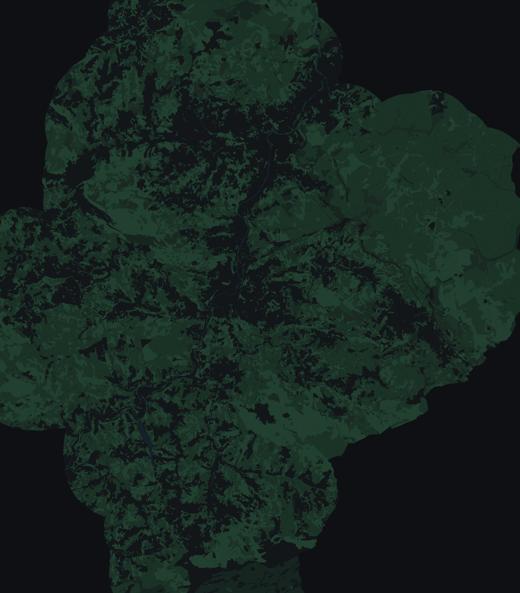

flAIre map of Tolosaldea
2,712 / 3,331 homes within 12 min
Today: 9 fire stations (1 inside Tolosaldea).
Extra crews

Tolosaldea · Gipuzkoa
3,331 homes stand at the edge of this forest. Ask in your own words; every figure comes from a tool run on the project's data.
2,712 / 3,331 homes within 12 min
Today: 9 fire stations (1 inside Tolosaldea).
Extra crews
